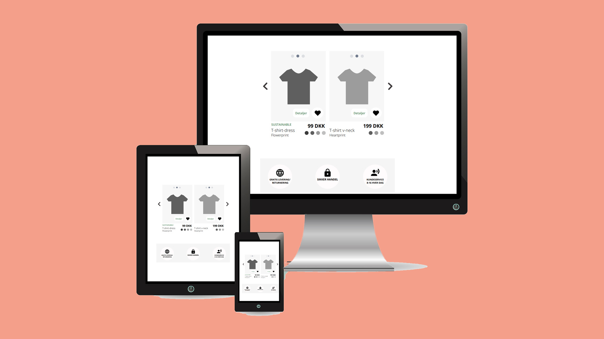

Tema 3
03.01.05 Ide
Det overordnede formål med denne opgave, var at lave en research over markedet og brugerne af t-shirts, som skulle ende ud i at vi ved temaets afslutning, fik designet en Hifi-prototype i Adobe XD, designet og produceret på baggrund af relevant indsamlet empiri.
For at løse denne opgave, benyttede jeg følgende metoder:
- Desk research
- Observations research
- Interview research
- Survey research

Processen
I første nævnte, søgte jeg på nettet efter brugbar empiri, herunder både kvantitativt og kvalitativt materiale. Det var begrænset, hvor meget konkret information man kunne finde, og hvad jeg først antog var realiteter, viste sig senere ikke at være tilfældet.
F.eks. søgte jeg under min desk-research, at finde succesfulde t-shirtshops og fandt ligheden med disse sites, at mange valgte at vise prisen på produktet, meget småt. Mine efterfølgende observations research, samt survey, viste dog, at mange foretrak at prisen gerne var tydeligere, så det var nemmere at vurdere prislejet, hvilket gav anledning til ændringer i mit første udkast til produktet.
Jeg fandt desuden ud af at mange valgte at handle t-shirts via mobiltelefonen, som jeg fandt ud af fra mit interview og min survey, hvilket jeg personligt ikke gør meget brug af, dog gjorde jeg brug af informationen, så jeg kunne skabe en prototype, som i højere grad levede op til forbrugernes ønsker.
Jeg lavede desuden to former for observationsundersøgelser, nemlig observation af en tænke-højt-test i en online købsproces, samt observation af en fysisk butik. Jeg opdagede her, at jeg fandt informationen fra tænke-højt-testen, mere brugbar, end observationen fra den fysiske butik, da jeg i denne proces fik forbrugerens tanker med i købsprocessen, som kunne bruges til udviklingen af prototypen, herunder søgemekanikker og browsing af tøjet, som ikke i samme grad, gjorde sig gældende i købsproceseen i de fysiske butikker.
Jeg gjorde derfor meget ud af at skabe en prototype, som var mobilvenlig med høj usability, ud fra informationen jeg fik for mine undersøgelser.
Løsning på opgaven
I løbet af perioden, blev vi bedt om at tænke på, hvilke slags t-shirts, hvilken målgruppe, den fiktive t-shirtwebshops USP.
På baggrund af mine analyser, fandt jeg frem til følgende emne:
At sælge t-shirts med latte-art-print, af høj kvalitet med fokus på at promovere sig som et high-end brand. Webshoppen skal differentiere sig ved at sælge t-shirts af anden type end normale t-shirts, fx t-shirt-dresses, anderledes udskæringer i hals og ærmer eller lignende.
Fra research til ide
- Målgruppen skulle være unge piger i alderen 20-30 år, da jeg fandt ud af at denne målgruppe, var dem der mest gik med t-shirts
- Målgruppen skulle lade sig inspirere af influencere, ved brug af en me-too-strategi (ikke at forveksle med den omdiskuterede debat)
- Produktet skal positioneres som værende eksklusivt, med et latte-art-logo på trøjen, som udbydes i mange forskellige t-shirttyper
- Virksomheden skal fremstå kundevenlig og miljøfokuseret, med fokus på at fortælle at de giver overskud til velgørende formål
Til at starte med, havde jeg en ide om at websitet skulle ligne en kaffebar, som solgte t-shirts, netop for at skille sig ud, men på baggrund af min survey og interview, viste dette koncept sig at være forvirrende for forbrugeren, så denne idé fulgte jeg ikke til dørs.
Til slut, benyttede vi forskellige metoder inden for skitsering, herunder simpel skitsering og Crazy 8, som endte ud i den færdige Sketch. Resultaterne her af, dannede grundlag for hvordan jeg startede med at opbygge med prototype. Det overraskede mig at jeg funder Crazy 8, fik en ide til opsætningen af min prototype, som jeg ellers ikke havde overvejet.